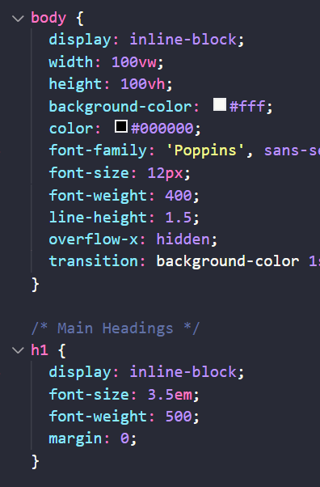

Design Portfolio
Creating a home for my project work
Overview
My design portfolio is an online platform that displays my work, design skills, and personality to other designers, potential recruiters, and hiring managers.
This project also serves as a medium for me to practice and demonstrate my understanding of front-end development and web design.
Role: Front-End Dev, Web/UX/UI Designer (solo)
Tools: Adobe XD, VS Code, Atom, GitHub, Google Sheets
Timeframe: Nov 2021 - Present
Design Process
Structure 🧰
Design 👒
Style 👗
Develop 💻
Test 🧪
Visual 🎇
Structuring my website 🧰
HTML
I began creating my website by writing its HTML documentation using the IDE, Atom. To ensure accessibility, I coded my portfolio using a mobile-first approach. In order to focus on content over style during this stage, I based my web structure on sample wireframes.
Sample Wireframes Structure
Github repository
I used GitHub Desktop to create a repository for my website. This was incredibly useful because it allowed me to back-up, commit, and track my changes as I worked on my portfolio.
I anticipate when I work on team projects, GitHub will be even more useful for reviewing and working on shared files, so learning to use it during this project felt like good practice.
Designing the web style 👒
CSS
With the structure finished, I began writing the CSS to emulate the sample wireframes. However, I noticed I was constantly tweaking the CSS as I was writing. Therefore, I decided I needed something to guide my design the way I wanted it.
Sample Wireframes Style
Lo-fi wireframes
To create a guideline for my web design, I sketched lo-fi wireframes in pencil and paper. As I sketched, I annotated my wireframes with ideas for micro-interactions and animations to make my portfolio feel more unique and personal.

Hi-fi wireframes
I used Adobe XD to refine my lo-fi sketches and create hi-fi wireframes. I was able to depict exactly what I wanted my portfolio to look like which provided guidelines to stick to and ease of mind from not having to design as I go.
Additionally, mocking up my site using a design tool was great practice for future projects. With XD, I was able to create components and save colors and character styles. Seeing my design from the development perspective revealed the importance of creating clear and consistent assets as a designer.
mockup

site
Advancing the web style 👗
Responsive design
It was important that my website was usable in multiple screen sizes to adapt to a variety of users and devices. I added adjustments to the CSS for medium, large, and x-large scren sizes.
Hi-fi Wireframe for X-Large Screens
Micro interactions & Animation
To advance the style of my portfolio further, I re-visited the micro-interaction ideas I noted during lo-fi. Not only do these CSS interactions make my portfolio less static, they provide helpful feedback to users.
I also explored CSS animations to add more personality. To avoid distracting movement, I animated some elements on hover or click (try to find the easter egg animations hidden throughout my site! 🕵)
Developing the website 💻
JavaScript
Micro-interactions are fun and useful, but don't provide logic-based functionality. I created a JavaScript file and added jQuery to my HTML documents to add advanced interactivity to my site.
The first script I wrote was for a menu to help users traverse my portfolio. Press the menu icon to check it out! 👉
Slideshows
I needed slideshows to present multiple, related images throughout my project pages.
One of the many glories of writing in widely used development languages is the abundance of resources. Scouring the web, I found a plugin called Slick. It was easy to implement, and after adjusting it's CSS stylesheet, I created beautiful slideshows that matched my site's aesthetic.
Testing the website 🧪
Usability testing
I was having fun developing my website, but did it even work? I tested my site by recruiting participants to complete specific scenario tasks.
Participants were instructed to act as a Design Team Lead looking to hire a new UX designer; a target audience of my portfolio. The goals of this usability test were to observe whether participants were able to: learn about my projects, learn about me, find my resume, and contact me.
I compiled the usability test data into a rainbow spreadsheet, which grouped partcipant feedback and prioritized site errors to be addressed.
Error addressal
I addressed each site error in order of priority - most errors were rated fairly low and were easy to address as described in the Rainbow SpreadSheet.
Issue: Users had trouble finding where to learn more about me.
Severity: Low
Evidence: Two of six test participants navigated to the portfolio project when looking for where to learn more about me.
Solution: Change the name of the portfolio project to make it more clear that it's a project of its own.
Adding visual flair 🎇
Background colors
One recurring usability test feedback was that the index page was too plain.
To address this, I wanted to apply full page color scrolling to add personality and maintain minimalism. I tried a CSS method utilizing the scroll-snap property, but it was difficult to use. Users had to scroll to a specific spot on the page to full scroll properly.
Eventually, I found a plugin that changed the site background color depending on screen content. I adjusted the script and style and was happy with the result.
Parallax
While exploring other professional websites, I noticed many use parallax, a framework that enhances images by providing layering and movement. I found a simple parallax plugin that acted similarly and added it to my project banner images, creating beautiful yet subtle movement to my portfolio.
Reflecting on my work 🤔
Challenges
-
Wireframes: Working with sample wireframes would have gotten my portfolio ready and out there earlier, but I already had experience with front-end development and didn't want to develop a site that I'd eventually change entirely. Next time I work on a website, I know to work on wireframes ahead of time.
-
Hand coding: Since this is my first time working on an official website, I hand coded most of it. I know this isn't practical most of the time - I'd likely use frameworks in the future (but it was still great practice).
-
IDE: I initially downloaded Atom to follow the sample wireframe instructions. At some point during my project, Atom froze and I could never get it to work again. I switched to VS Code since I'm familiar with it anyway - I think it's better to work on something I understand more when learning new concepts (I also installed the Live Server extension, which is truly a life saver).
Next steps
I'm always looking to grow and improve my portfolio. In fact, it probably already looks different compared to the screenshots in this case study! My next steps as of today (01/12/22) are:
-
Adding more case studies: I'm currently working on a case study that I'll eventually add to my portfolio to showcase more work (so much to do...).
-
Design critique: Usability testing was incredibly helpful in improving my site. To improve on it further, I have been doing design critiques with other designers and a career specialist. In fact, many of the new changes are based on feedback from my peers! I'm excited to meet with them again to discuss my many updates.
-
Feed page: I was wondering what to add to my portfolio to express my personality. I've been starting multiple personal projects to learn different skills and tools, one of them being food photography and PhotoShop. I'm planning on creating a Feed page to share my yummy food creations!
Thanks for reading!
Check out my other work